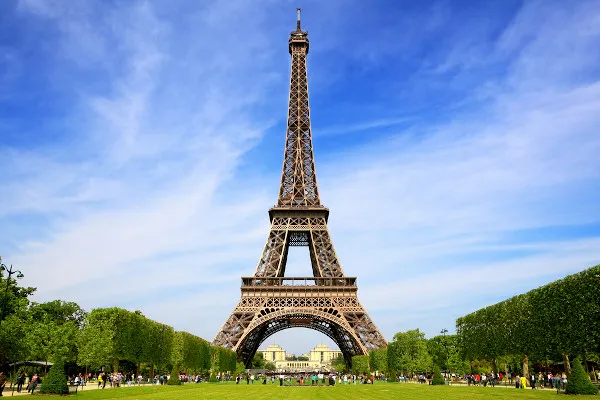

Paris, França
Paris, a Cidade Luz, é famosa por sua arquitetura deslumbrante, museus de classe mundial e alta moda. Não deixe de visitar a Torre Eiffel, o Louvre e a Catedral de Notre-Dame.

Roma, Itália
Roma é uma cidade repleta de história antiga. Explore o Coliseu, o Fórum Romano e o Vaticano, lar da Basílica de São Pedro e dos Museus Vaticanos.
Santorini, Grécia
Santorini é famosa por suas vistas deslumbrantes do mar Egeu e suas casas brancas e cúpulas azuis. Além disso, você pode explorar antigas ruínas minoicas e desfrutar de praias incríveis.